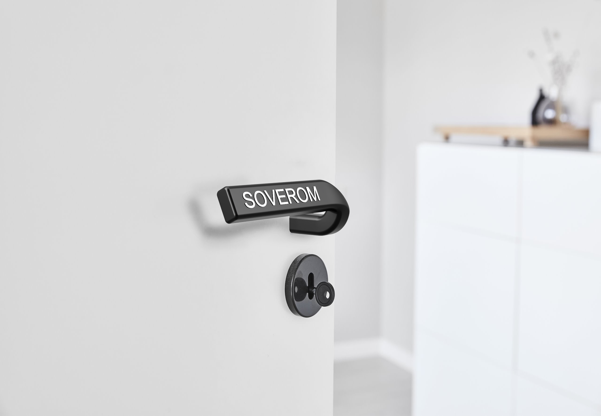
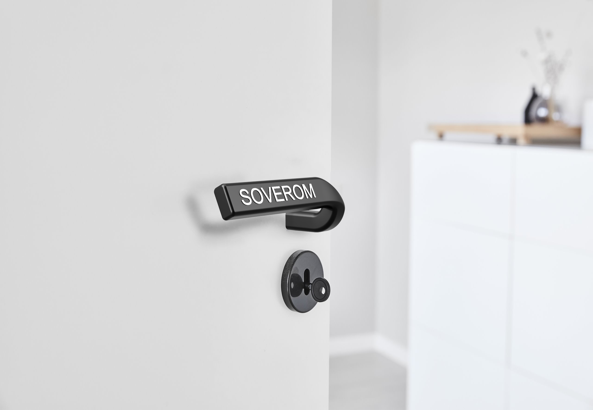

Det første emne i produktdesign går ut på å lage et dørhåndtak. Mitt konsept går ut på å flytte navnskiltet ned på dørhåndtaket. I tillegg har jeg lagt til blindeskirft på baksiden, slik at de som er blinde eller svaksynte også enkelt kan finne fram. Prototypen er støpt i aluminium og det er brukt CNC til å maskinere ut bokstavene.
 

How It's Made


Mockup
I denne prosessen var første steg å finne ut en form som var god å holde, samt med riktig lengde på skaftet. Leire er funker bra fordi det er lett å kutte i eller legge til materiale.

digital mockup
Når man har en ide om proposjonene er neste steg å lage digitale mockups. Her er et tidlig eksempel på konseptet

Protoype
Etterhvert sitter man igjen med et design med bra form og brukervennlighet i digital form. Nestesteg er da å lage en prototype. Her er protoyypen 3d printet og lakkert for å gi en bedre finnish og resultat.

Prototype i aluminium
Senere når jeg ble mer erfaren på skolen bestemste jeg meg for å ta protoypen et steg videre og støpte den derfor i aluminium. Senere brukte jeg CNC til å gravere inn tekst på framsiden og blindeskrift på baksiden.